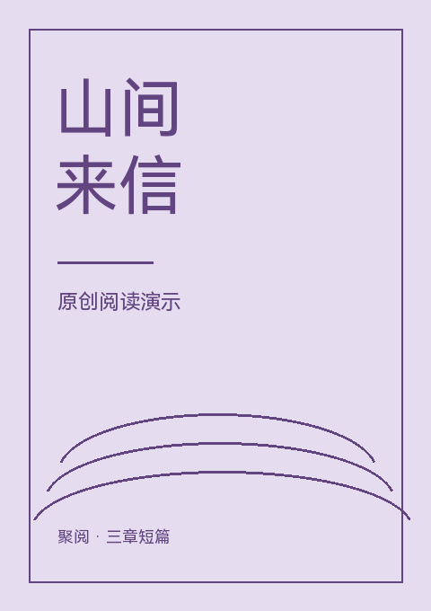
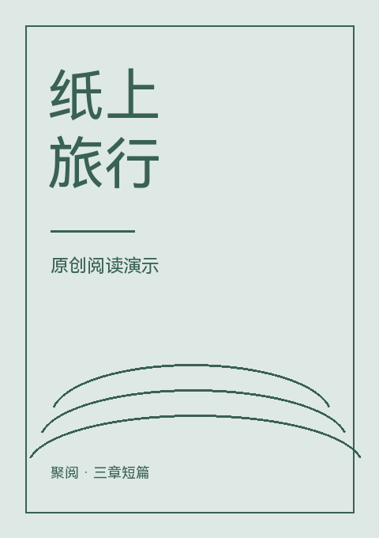
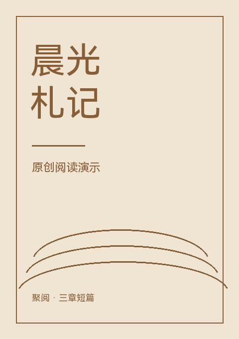

聚阅 · 独立演示仓库从三本小书，
开始一次阅读。
三篇原创短篇，九个完整章节。用于演示来源安装、搜索、阅读、缓存及 JSON 数据迁移，无需账号。



在聚阅的「扩展 → 插件仓库」中输入下方索引地址，然后安装「聚阅原创阅读演示」。
https://hanyin111.github.io/fusion-reader-demo-extensions/index.json本仓库仅含原创演示作品，不关联其他内容仓库。脚本和原创文字按 MIT 许可提供。